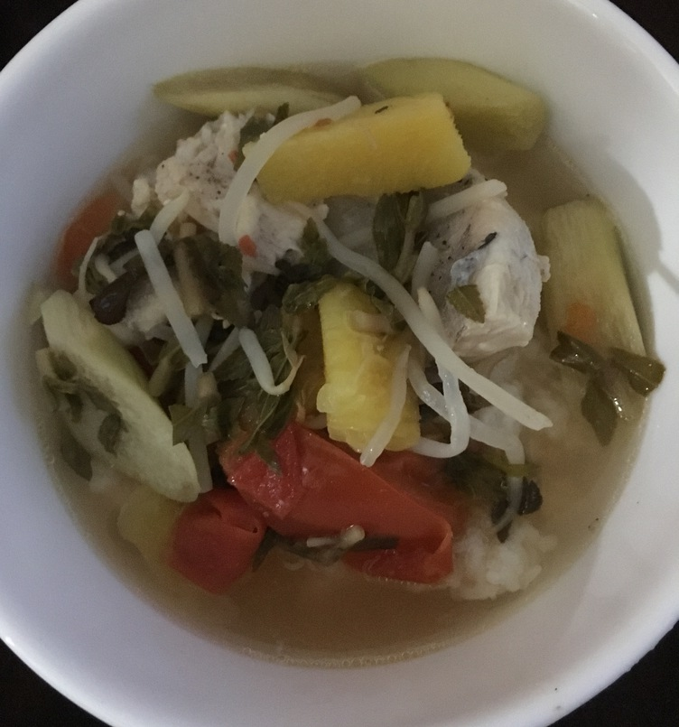

| Other | Meat | Veggie | Fruit |
|---|---|---|---|
| nuoc mam | catfish | bean sprouts | pineapple |
| pepper | elephant ear stem | ||
| salt | garlic | ||
| sugar | green onions | ||
| tamarind | okra | ||
| rice paddy herbs | |||
| tomato |
| instructions |
|---|
| Cut up tomatoes, pineapple, elephant ear stem, herbs into small chunks |
| Pour boiling water into 1.5 spoonfuls of smashed tamarind pulp in a bowl |
| Marinate catfish with salt and pepper |
| Fry some garlic until golden |
| Add some water to a pot |
| Drain liquid from tamarind into pot, discard excess pulp |
| Add a ratio of 1 sugar : 1 nuoc mam |
| Add catfish and boil for 10ish min, remove from stew |
| Add in veggies and cook |
| Put the catfish back into the stew |
| Adjust tastes as necessary |